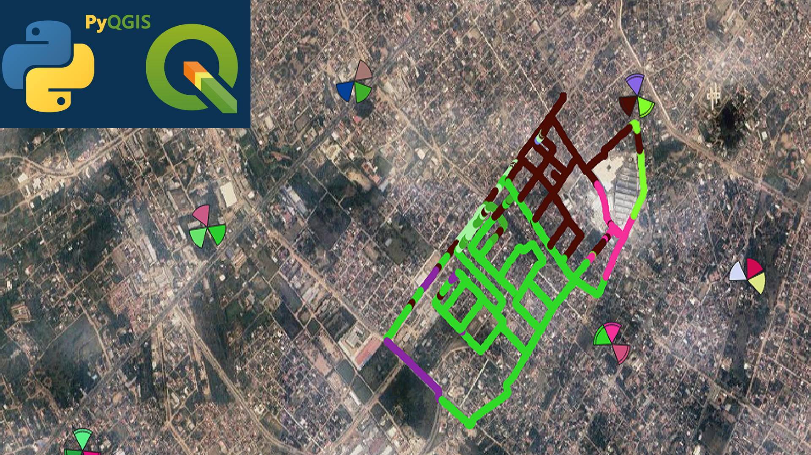
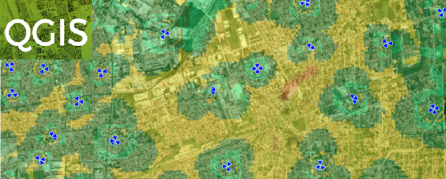
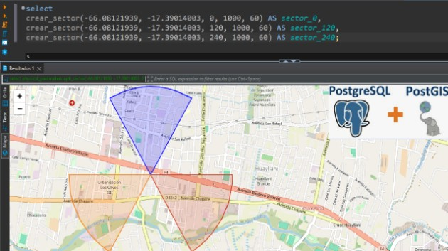

Crear sectores RF con mapa de fondo en QGIS
Aprovecha herramientas gratuitas de SIG como QGIS para visualizar sectores de antena y realizar análisis geoespaciales similares a MapInfo o ArcGIS, pero con flexibilidad open-source.
Artículos, tutoriales y reflexiones sobre optimización RF, automatización con Python y análisis de datos para redes móviles

En telecomunicaciones, identificar los "best servers" es esencial para optimizar la red. Comparto un script que asigna colores dinámicos a muestras de PCI y celdas LTE en QGIS, facilitando la interpretación visual de datos de Drive Test y acelerando el análisis de cobertura.

QGISAprovecha herramientas gratuitas de SIG como QGIS para visualizar sectores de antena y realizar análisis geoespaciales similares a MapInfo o ArcGIS, pero con flexibilidad open-source.
 QGIS
QGIS
Optimiza tu flujo de trabajo cargando archivos de Drive Test (.tap) directamente en QGIS. Aprende a visualizar LTE-RSRP y generar reportes geoespaciales de forma eficiente.

PostgreSQLEn las telecomunicaciones, los sectores de cobertura representan áreas donde una antena transmite señal. Este concepto es fundamental para ingenieros de RF (Radiofrecuencia) que planifican y optimizan redes celulares. Este artículo presenta una función en PostGIS que genera sectores de cobertura referenciales para análisis visuales iniciales.
Pipeline ETL para procesamiento batch de datos de red, reducción de tiempos de reporte y generación automática de dashboards ejecutivos.